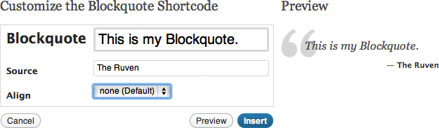

“Arcadia WordPress Theme” Documentation by Ruven
“Arcadia WordPress Theme”
Created: May 10, 2012
By: Ruven
Informations about updates and new themes are always announced on Google+, Facebook and Twitter.
Thank you for purchasing my theme!
This documentation will teach you how to use the Arcadia WordPress Theme.
I provide pretty extensive help in this file, but this doesn’t mean the theme is hard to use.
I just want to cover every question that might occur.
I also guide you from the installation process through theme specific functions to filling your page with content.
If questions occur that are not covered by this help file, feel free to ask your question in the comment section of this item.
Have fun with your new theme!
Best regards,
Ruven
Table of Contents
- Folder Structure
- Installation
- Setup
- Adding Content
- Shortcodes
- Modifying the Theme with a Child Theme
- Translating the Theme
- Updating the Theme
- Default Image Sizes
- CSS Files and Structure
- Photoshop Files
- JavaScript and jQuery
- FAQ
- Support
- Sources and Credits
A) Folder Structure - top
Inside the theme folder you will find some folders that are for internal use only. The folder that may be important to you is the folder lib/frontend/.
- framework → internal universal classes and functions that are needed to make the theme run
- languages → folder for translation files
- lib → theme secific files
- backend → internal functions that are used by the admin panel
- frontend → files that are used for the layout
- fonts → font files that are used to display the integrated fonts with the @font-face method
- functions → functions that are needed for the frontend of the theme
- images → layout images and icons for the theme
- javascripts → contains the jQuery Framework, Cufon files and jQuery plugins
- plugins → contains additional jQuery plugins that are including files of different document types and theme plugins
- stylesheets → just contains the reset.css. The main CSS code that styles the theme can be found in the root directory of the theme
- templates → contains template files for the theme (e.g. code for different front page sliders)
- shared → functions that are used by the layout and the admin panel
B) Installation - top
1) Installing WordPress
If you are new to WordPress and haven't installed it on your server yet, I recommend to read the official WordPress installation instructions.
2) Installing the Theme
You can either install the theme by uploading it from the admin panel, which is the easiest method, or you can upload it via FTP to your server. Some hosting companies restrict the upload size of files, so if the first method doesn't work, please try the second one (via FTP). Here are the steps for both methods:
Installing the Theme via Upload from the Admin Panel
- Unzip the package you've downloaded from ThemeForest
- Log in to your WordPress admin panel
- Go to Apparance → Theme and click the tab called Install Themes (on top of the page)
- Now click the upload link and click the button Choose File
- In the dialog window, navigate to the folder that you just unzipped and double click the file Arcadia.zip
- Now click on Install Now
- Wait till you see the message Theme installed successfully
- Click the Activate link and you'll find yourself in the theme settings - it's done!
Installing the Theme via FTP (in case it doesn't work via the Admin Panel)
- Unzip the package you've downloaded from ThemeForest
- In the unzipped folder, unzip the file Arcadia.zip
- Open your FTP program and log on to your server (if you don't have an FTP program, I'd recommend FileZilla
- On the server, navigate in your WordPress installation to the directory /wp-content/themes
- Now upload the folder called Arcadia, that you just unzipped, into this directory
- When the upload is complete, log in to your WordPress admin panel
- Go to Apparance → Theme
- Here you should see the Arcadia Theme
- Click the Activate link and you'll find yourself in the theme settings - it's done!
Notice: If you should've trouble with the theme installation, I recommend to read the official WordPress Theme installation instructions.
Now we can start to fill your site with content and then set up some options for the theme.
C) Setup - top
1) Import Dummy Content
In the unzipped folder of the file you've got from ThemeForest, you'll find another folder called Dummy Content. In there you'll find the file dummy_content.xml. Here are the steps to import this file into WordPress, so you can have an easier start:
- Log in to your WordPress admin panel
- Go to Tools → Import
- Click the link that reads WordPress in the tables last row
- On the next screen with the title Import WordPress, click the button Choose File
- In the dialog window, navigate to the unzipped theme folder and then into the folder Dummy Content, where you double click the file dummy_content.xml
- Now click the button Upload file and import
- On the next screen I recommend to assign the imported posts to an existing user (with the select menu) and to activate the checkbox called Download and import file attachments
- After you click submit you should get an All done message :)
2) Basic Theme Settings
Arcadia has a lot of admin options. But don't worry - you don't have to go through all of them to make the theme work. In fact, the theme works right out of the box. There are just a few things you have to set up to get your Front Page, Blog and Portfolio going. Basically, you just need to create 3 new pages (Pages → Add New): one for the Front Page, one for the Blog and one for the Portfolio. If you imported the dummy content you'll already have these pages and you can jump right into the options:
Setup Front Page
- Go to Theme Options → Front Page
- Select the page Front Page from the select menu under the options Select Content Page
- Click the button Save Changes (on the bottom of the page)
Setup Blog
- Go to Theme Options → Blog
- Select the page Blog from the select menu under the options Select Blog Page
- Click the button Save Changes (on the bottom of the page)
Setup Portfolio
- Go to Theme Options → Portfolio
- Select the page Portfolio from the select menu under the options Select Portfolio Page
- Now select the categories of which you want portfolio entries on your page
- Click the button Save Changes (on the bottom of the page)
D) Adding Content - top
1) Custom Menu
Notice: If you've never worked with the Menu Manager before, I recommend reading the WordPress Codex Page about Menus.
I highly recommend to create a custom menu for the main navigation, because else, WordPress will automatically add every new page that you create to the main navigation and it can easily "overflow".
To create a custom menu, do the following steps:
- Go to Appeance → Menus
- Enter a menu name (e.g. "Main") and hit Create Menu
- In the panel Theme Locations under Main Menu, select your newly created menu (e.g. "Main") and hit Save
- Now you can start adding menu items from the panels on the left side of the screen
- Hit Save Menu when you're done adding items
As you might have noticed, there are two more locations in the panel Theme Locations called Header Bar Menu and Footer Bar Menu. By clicking the + tab you can add more custom menus and add them to these locations. The options for the header and footer bars can be found under Theme Options → Info Bars. There you can pick what type of content to show in the info bars. And under Theme Options → Layout you can decide if the info bars should be displayed at all.
2) Adding Posts, Pages and Portfolio Entries
The options for Posts, Pages and Portfolio Items are almost the same. The theme adds some extra panels called Featured Content Replacements (will be described below) and Template Options, to change the page content size (sidebar or full width), the sidebar position (left or right), the sidebar style (default or wide), the sidebar (that you can add in Theme Options → Sidebars and fill with widgets in Apperance → Widgets and, for Portfolio Entries, the link to external websites (which displays a Visit Site link next to the Read More link).
How to set an excerpt
You can set excerpts in 3 different ways. By default an excerpt of 55 words is created for overview pages. You can change this in Theme Options → Blog and Theme Options → Portfolio. You can either chose that the excerpt is automatically created or that you want to set it by yourself by setting a More Tag in your text or by writing the excerpt in the excerpt panel. If you prefer to write a summary of your post in the excerpt panel you might have to activate it first. To do that, click the Screen Options tab on the top right corner of your screen and set a check mark on Excerpt. For Portfolio items I would always recommend to do it this way, since you can write a quick summary about the item separate from the text.
How to set a featured image
The panel for the Featured Image is on the bottom right. Click the link Set featured image to let the media library appear. Upload or choose an image and click Use as featured image (not Intert into Post). Don't worry if the scale of your image is too big, because the theme automatically downsizes the image to fit.
How to replace the featured image for certain areas
A panel called Featured Content Replacement is located directly under your editor. Here you can overwrite the Featured Image for certain areas.
For example: if you want to show a different image on the single post than the Featured Image that is displayed in your blog / post overview, paste the URL to your image of choice into the Overview field.
Or if you want to show a videos instead of the Featured Image in the Lightbox, paste the link into the Lightbox field.
To get the URL you can also simply click on the Set Content button to make the media library appear. Select your image and click the Insert into Post button.
You can also set the resize method for the content with the select menus under the content input fields.
If you leave the option Inherit Size from Image Options on, the images will adapt the size you've set in the theme options for the specific post type.
For example: if you edit a blog post and set a replacement image or video with the resize method Inherit Size from Image Options, it will scale the image or video exactly after the Featured Image Size settings you've entered under Theme Options → Blog.
How to set videos and images as Lightbox content
If you set a Featured Image, the lightbox will automatically display a big version of the image. But if you want to change the lightbox image into something else or even display a video instead, you have to paste the URL to the image or video into the Lightbox field. Please be aware that the Lightbox field is the only field besides the others where you don't have to paste in the video embedding code. Just paste in the URL to the video and the theme will figure out the rest.
Here are some examples of how the URL could look like:
- Vimeo Video: http://vimeo.com/16369165
- YouTube Video: http://www.youtube.com/watch?v=7JAyaBuOYyY
- Resized Vimeo Video: http://vimeo.com/16369165?width=800&height=450
Noticed something in the last URL example? Yes, you can even set the size of the video by adding some URL parameters to the video URL (e.g. ?width=800&height=450).
You can find more examples on the homepage of the lightbox creator:
http://www.no-margin-for-errors.com/projects/prettyphoto-jquery-lightbox-clone/
How to embed videos correctly
In the Featured Content Replacement panel you have the option to embed videos in the fields Overview and Entry.
You get the embed code on the video portal websites.
E.g. on YouTube you just have to click Share → Embed under the video, and then copy and paste the embed code into the field.
The width and height of the video don't have to be adjusted, because the theme will resize the video automatically.
Only in case you want to embed a video into the content (Visual or HTML editor) instead of the featured area, you have to set the right size. For a page that has a sidebar that would be 600 pixel width and for a full width page (without sidebar) it's 900 pixel width (the height gets adjusted automatically).
3) Adding Slider and Featured Items to the Front Page
To add slider or featured items to the front page you first have to set what slider or feature area you want to see on the front page. You can do this by going to Theme Options → Front Page and select a method from the select menu in the Slider / Feature panel.
If you haven't choosen Static Content / Video (which can be set directly in the Front Page settings), please navigate now to Featured Items → Add New.
Here you need to set a Featured Image and a title.
The rest is optional.
Depending on the slider or feature area you've picked, you'll see options like Description and Featured Item Link and in some cases even a whole panel with more slider settings (e.g. Caption Position [to position the description text as caption] or Read More Link [to change the text of the read more link].
So please check out these options, after you changed the slider in the Front Page options.
The possibilities might surprise you ;)
4) Disable Comments for Posts or Pages
To disable comments for all new posts and pages, go to Settings → Discussion and uncheck the box Allow people to post comments on new articles.
Please note that this only disables for new posts and pages.
The ones you already have, need to be disabled manually.
To do this, please follow these steps:
- Go to edit the post or page you want to disable the comment on
- On the top right of your window you'll see a little tab called Screen Options that you click
- In the roll-down area, check the box Discussion if it is not already checked
- Now scroll down and you should see a panel called Discussion below the other panels
- In this panel uncheck the box Allow comments and you're done!
E) Shortcodes - top
Shortcodes in Arcadia are as easy as pie. When ever you edit a page or post, look for the little yellow flash icon in the toolbar of the visual editor. One click on it reveals a menu of all the shortcodes you can insert into your page. Just choose the one you need...
 Some shortcodes offer you an options form to configure the output. Some of these forms might seem extensive, but please keep in mind that the most options are optional and don't have to be set. Required fields are marked bold (like the first option Blockquote in the screenshot).
F) Modifying the Theme with a Child Theme - top
Over are the dark old days where you had to modify the theme directly to make some changes, but then weren't able to update it anymore.
Arcadia is a robust parent theme, so if you want to change functions, classes or template files, all you have to do is to create a child theme and overwrite the already existing function.
This way the original theme stays untouched and you can preform updates without worrying that your code gets lost.
I even created a child theme skeleton to make the process even easier for you.
Just upload the ZIP file that is in the theme package folder Child Theme Skeleton the same way as it is stated in the section Installing the Theme. After you activate your child theme you will be able to operate inside this theme and all changes will be applied to Arcadia.
Notice: If you've never worked with child themes before I recommend reading the WordPress Codex page about child themes. Turst me, you'll get it easy and it is well worth the efford :)
G) Translating the Theme - top
Arcadia is complete translation ready. Whithin the theme files you'll find a folder called languages. This is where your translation files go. German, Dutch, French and Spanish are already included, but by default the theme speaks english.
Here are the steps to create a translation file for another language:
- Download a gettext file editor like poedit and install it.
- Open Poedit and select File → New Catalog from POT file...
- In the dialog window, navigate to your theme files into the folder languages and double click the file arcadia.pot
- On the next window that pops up you can give your catalog a name and a version (e.g. "Arcadia Swedish 1.0"), select a language, a country and two charsets (should be set to UTF-8)
- After you hit OK, Poedit will open a new save dialog window and you should save you new translation file into the languages folder and name it after the appropriate country code (e.g. "de_DE.po")
- Now you can start translating
- Hit Save when you're done
Notice:
If you're not sure what country code to use, you can also check it in the file wp-config.php in the WordPress root directory.
Just open the file and search for the line define('WPLANG', ''); (should be around line 72).
By default (if nothing is set) the country code is en_US, but you can also set it manually, e.g. to define('WPLANG', 'de_DE');.
This would, of course invoke the file de_DE.po.
If you have WordPress already installed in the language you've translated your theme to, the translation should kick right in. If it doesn't, make sure to install WordPress in the right language or change the WordPress language manually (as described in the notice box above).
H) Updating the Theme - top
There are two ways to update the theme. You can either the use the Envato WordPress Toolkit plugin and update Arcadia (and all other ThemeForest themes) through WordPress' admin panel, or you can do it manually by using an FTP client.
Here I describe both ways:
1) Automatic Updates
- Download the Envato WordPress Toolkit plugin.
- Upload the envato-wordpress-toolkit folder to the /wp-content/plugins/ directory on your server.
- Activate the plugin through the Plugins menu in WordPress.
- To establish a ThemeForest API connection, navigate to the Envato Toolkit page and insert your ThemeForest username and secret API key in the designated input fields. To obtain your API Key, visit your My Settings page on ThemeForest.
- After clicking Save Settings, you should see all ThemeForest themes you have installed. If an update is available, you'll see a message below the theme and you can click on update automatically.
2) Manual Updates
A manual update requires you to re-download and re-install the theme on your WordPress installation. But don't worry. None of your theme settings will get lost (they are stored in the database and not in the theme files).
To get notified about updates, you should add me on your social networks:
Please follow these steps to update the theme:
- Re-download the theme package from ThemeForest in My Account → Downloads (here you can also rate the theme).
- Log in to your WordPress admin panel.
- Go to Apparance → Theme and deactivate the current Arcadia theme by temporarily activating the default theme Twenty Eleven.
- Under Available Themes, on the deactivated Arcadia theme, click on Delete to remove it.
- To upload the new version of the theme, just follow the installation instructions from above.
Notice: If you have ever modified any theme files directly, I assume you have a local copy of them on your computer. If you don't, please login to your WordPress installation via FTP and backup the old theme files, before you remove them from the server. Please note that these modifications will be lost after the update. Child Themes are the right choice to modify theme files without losing the code after an update (you can read about them here).
I) Default Image Sizes - top
By default the following image sizes are used by the theme:
| Type | Width (in pixels) | Height (in pixels) |
|---|---|---|
| Feature / Fullwidth | 900 | 408 |
| 1 Column | 586 | 274 |
| 1 Column (Full Width) | 886 | 415 |
| 2 Columns | 274 | 150 |
| 2 Columns (Full Width) | 418 | 220 |
| 3 Columns | 169 | 104 |
| 3 Columns (Full Width) | 261 | 152 |
| 4 Columns | 118 | 86 |
| 4 Columns (Full Width) | 184 | 124 |
| Two Third | 377 | 273 |
| Two Third (Full Width) | 586 | 274 |
| One Half | 274 | 188 |
| Two Third (Full Width) | 418 | 220 |
| One Half | 274 | 188 |
| One Half (Full Width) | 418 | 220 |
| One Third | 169 | 169 |
| One Third (Full Width) | 261 | 261 |
| One Fourth | 118 | 118 |
| One Fourth (Full Width) | 184 | 184 |
| Image inside default Sidebar | 249 | * (various) |
Since the theme supports extensive options to change the image sizes, you can change the height of almost all of them within the admin panel.
J) CSS Files and Structure - top
The CSS code structure is pretty simple.
In every CSS file you will find headlines that tell you what the following code is about.
Technical Note:
In front of every headline is the word @group.
This is a special tag, that is used by some CSS-Editors in order to let you navigate through your code faster by the use of a tree view where every group gets displayed as a folder.
K) Photoshop Files - top
Among with the theme come all PSD files needed to edit the different layout styles and colors. With these files you can even create your own unique layout style.
L) JavaScript and jQuery - top
Notice: Every JavaScript plugin works out of the box or can be controlled by through the WordPress admin panel. You only have to read this section if you intent to edit or apply new JavaScript code.
This theme makes use of the jQuery JavaScript Framework and contains plugins that are written with the frameworks syntax. Further the theme is using the font replacement engine Cufon.
All JavaScript files are included in the head of the theme files.
Most of the JavaScript files can be found in the directory lib/frontend/javascript.
The files of plugins that require more than just a JavaScript file are located in the directory lib/frontend/plugins.
Plugin Settings and Custom JavaScript
To change the settings of a plugin, simply edit the script.js file inside the javascript folder. Here you will find all the code that configures and invokes the plugins.
M) FAQ - top
How can I thank you for this awesome theme? =D
That's easy. If you're satisfied with the theme, you could log in to your ThemeForest account rate the theme. You can do this under My Account / Downloads. Just hover over the 5th star and click ;p
N) Support - top
If you have any further questions, please use the comment section of this item at themeforest.net. This way other users can benefit from the solution as well. I will try my best to answer every question.
O) Sources and Credits - top
The template is using the following external scripts and resources:
- Nivo Slider jQuery Slideshow Plugin
- prettyPhoto jQuery Plugin (as Lightbox)
- Validation jQuery Plugin (to validate forms on the fly)
- Form jQuery Plugin (to submit forms via AJAX)
- Icon Sweets 2 for the text icons
- Social Bookmark Icons
- Fonts from Font Squirrel
- Google Web Fonts
Thank you very much for purchasing this theme! I wish you all the best for the website that will grow out of it. If you want, you can post the URL of your final website in the comment section. I would really like to see how this theme takes its place in the world wide web :)
Best regards,
Ruven